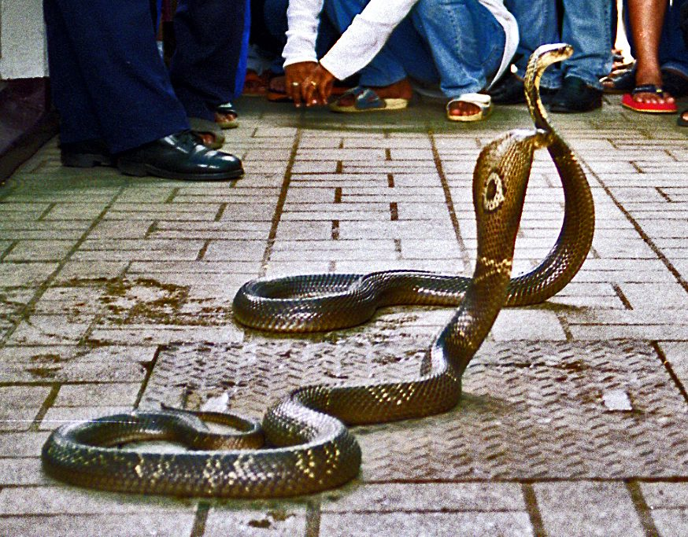

मोनोकल्ड कोबराMonocled Cobra
Naja kaouthia · Elapidae · REP-0057

- Scientific name वैज्ञानिक नाम
- Naja kaouthia Lesson, 1831
- Family कुल
- Elapidae
- Hindi हिंदी
- मोनोकल्ड कोबरा
- Local names स्थानीय नाम
- monocled cobra, ekchashmi nag, kala nag
- Status here यहाँ की स्थिति
- native
- Movement आवागमन
- Resident, here all year
- Known from कहाँ दर्ज
- Others have published records from the wider Awadh–Purvanchal plain, none yet from Basti–Ayodhya अवध–पूर्वांचल से दूसरों के प्रकाशित अभिलेख, बस्ती–अयोध्या से अभी नहीं
- IUCN IUCN
- LC
- Review समीक्षा
- not yet reviewed
When to look कब देखें
Present all year. साल भर मौजूद।
Tell it apart from इनसे अलग पहचानें
मोनोकल्ड कोबरा / Monocled Cobra
Naja kaouthia Lesson, 1831 — Elapidae
मोनोकल्ड कोबरा — उत्तर और पूर्वी भारत के तराई व मैदानी क्षेत्रों में रहने वाला एक अत्यंत विषैला और खतरनाक सर्प। फन फैलाने पर इसके फन के पीछे केवल एक गोलाकार (एकचश्मी) निशान दिखाई देता है। स्मिथ (1943) के अनुसार इसके फन पर 25 से 31 शल्क होते हैं। इसका काटना जानलेवा होता है और तत्काल अस्पताल जाकर एंटीवेनम लेना अनिवार्य है। वन्यजीव (संरक्षण) अधिनियम के तहत यह एक संरक्षित प्रजाति है।
Quick Identification त्वरित पहचान
| Feature | Description |
|---|---|
| Build & Hood | Large elapid snake with dilatable neck hood; scales on neck 25 to 31 (Smith 1943) |
| Mid-body Scales | Scales at mid-body 19 to 21, scales in front of vent 17 or 15 (Smith 1943) |
| Ventrals & Subcaudals | Ventrals 164 to 196, subcaudals 43 to 58 (Smith 1943) |
| Hood Mark | Yellow or orange-coloured, O-shaped, or monocellate mark upon the hood (Smith 1943) |
| Coloration | Olivaceous or brownish to black above; belly paler than back (Smith 1943) |
Field tip: When the hood is reared and spread, look for a single yellow or orange-coloured, O-shaped, or monocellate mark upon the hood (Smith 1943, p. 431).
हिंदी:
फन फैलाने पर इसके पीछे एक अकेला गोलाकार निशान दिखता है। शरीर का रंग गहरा भूरा, पीलापन लिए हुए या काला होता है।
Morphology आकारिकी
Scale counts as recorded by Smith (1943, p. 431) for Naja naja kaouthia:
| Scale Count | Range |
|---|---|
| Scales on neck | 25 to 31 (Smith 1943) |
| Scales at mid-body | 19 to 21 (Smith 1943) |
| Scales in front of vent | 17 or 15 (Smith 1943) |
| Ventrals | 164 to 196 (Smith 1943) |
| Subcaudals | 43 to 58 (Smith 1943) |
Smith (1943, p. 431) described the coloration and pattern: "Young.— Olivaceous or brownish to black above, with or without a yellow or orange-coloured, O-shaped, or monocellate mark upon the hood; a black spot on the lower surface of the hood on either side, and one or two broad black cross-bars on the belly behind it. ..."
Vocalisations
Not available in consulted sources.
हिंदी:
स्मिथ (1943) के अनुसार गर्दन पर 25 से 31, मध्य शरीर पर 19 से 21 और गुदा के आगे 17 या 15 शल्क होते हैं। वेंट्रल शल्क 164 से 196 और सबकॉडल 43 से 58 होते हैं। परामर्शित स्रोतों में आवाजों का कोई विवरण उपलब्ध नहीं है।
Behaviour & Ecology व्यवहार और पारिस्थितिकी
Smith (1943) provided taxonomic descriptions and scale counts under Naja naja kaouthia. Field habits are not detailed in consulted historical texts.
हिंदी:
परामर्शित ऐतिहासिक स्रोतों में इसके प्राकृतिक व्यवहार का विस्तृत विवरण उपलब्ध नहीं है।
Life Cycle / Phenology जीवन चक्र
Not available in consulted sources.
हिंदी:
परामर्शित स्रोतों में इसके जीवन चक्र का कोई विशिष्ट विवरण उपलब्ध नहीं है।
Host Plants or Prey आहार
Not available in consulted sources.
हिंदी:
परामर्शित ऐतिहासिक स्रोतों में इसके आहार का विशिष्ट विवरण उपलब्ध नहीं है।
Predators / Natural Enemies शत्रु
Not available in consulted sources.
हिंदी:
परामर्शित स्रोतों में प्राकृतिक शत्रुओं का कोई विवरण उपलब्ध नहीं है।
Agricultural / Human Relevance कृषि प्रासंगिकता
Conservation legal status: Protected under the Wildlife (Protection) Act, 1972.
Medical significance: A bite is a medical emergency: go at once to a hospital that holds antivenom.
हिंदी:
मोनोकल्ड कोबरा का काटना एक अत्यंत गंभीर चिकित्सीय आपातकाल है। पीड़ित को तुरंत ऐसे अस्पताल ले जाना चाहिए जहां एंटीवेनम उपलब्ध हो। वन्यजीव अधिनियम के तहत यह संरक्षित है।
Expected Locally स्थानीय रूप से अपेक्षित
Not a field record. Written from published accounts for eastern Uttar Pradesh. No confirmed local sighting yet — if you have seen it, that is what the atlas needs.
अभी तक स्थानीय पुष्टि नहीं। यह विवरण प्रकाशित स्रोतों से है, किसी अवलोकन से नहीं।
GBIF holds published records from the wider plain: one photograph, Lakhimpur Kheri, 19 July 2024 (iNaturalist 299104010). A photograph with place and date would constitute a first record for the atlas.
हिंदी:
लखीमपुर खीरी से 19 जुलाई 2024 का एक फोटोग्राफिक रिकॉर्ड (iNaturalist 299104010) मौजूद है। बस्ती या अयोध्या से कोई रिकॉर्ड नहीं है। स्थान और तारीख के साथ एक फोटो एटलस के लिए पहला रिकॉर्ड होगी।
Distribution वितरण
Global range: Smith (1943, p. 432) recorded under Naja naja kaouthia: "Bengal and the Eastern Himalayas as far west as Nepal, the whole of Indo-China as far north as the Triangle in Upper Burma; southern China."
In India: Smith (1943, p. 432) noted: "Specimens found in the United Provinces and Bihar are possibly migrants from the Eastern Himalayas."
In Uttar Pradesh: One photograph, Lakhimpur Kheri, 19 July 2024 (iNaturalist 299104010).
In Basti district / eastern UP: GBIF holds no record from Basti or Ayodhya.
हिंदी:
स्मिथ (1943) के अनुसार यह बंगाल और असम से लेकर पश्चिम में नेपाल और संयुक्त प्रांत तक पाया जाता था। उत्तर प्रदेश में लखीमपुर खीरी से एक आधुनिक फोटोग्राफिक रिकॉर्ड है, किंतु बस्ती या अयोध्या से कोई रिकॉर्ड नहीं है।
Research Questions शोध प्रश्न
- How do scale counts of northern Indian Naja kaouthia specimens compare with published morphological ranges? / उत्तर भारतीय नमूनों के शल्क माप प्रकाशित आकारों से किस प्रकार मेल खाते हैं?
- What geographical markers delineate the westernmost records of monocled cobras along the Terai corridor? / कौन से भौगोलिक लक्षण तराई गलियारे में इस प्रजाति की पश्चिमी सीमा तय करते हैं?
- What hospital record documentation exists regarding monocled versus spectacled cobra bites in northern UP?
- How do seasonal rainfall patterns correlate with sightings reported near agricultural edges in the Terai?
- What morphological features distinguish non-hooded monocled cobras from other large colubrids in field photographs?
हिंदी:
1. उत्तर भारतीय नमूनों के शल्क माप प्रकाशित आकारों से किस प्रकार मेल खाते हैं?
2. कौन से भौगोलिक लक्षण तराई गलियारे में इस प्रजाति की पश्चिमी सीमा तय करते हैं?
Similar Species मिलती-जुलती प्रजातियाँ
| Species | How to tell apart | हिंदी | |
|---|---|---|---|
| [[indian_cobra | Indian Cobra]] (Naja naja) | Dorsal hood mark is a classic double-looped spectacle mark (U- or figure-8-shaped) | नाग |
| [[indian_rat_snake | Indian Rat Snake]] (Ptyas mucosa) | Lacks dilatable hood; prominent dark cross-bars on tail; large eyes; harmless colubrid | धामन |
Field rule: The yellow or orange-coloured, O-shaped monocellate mark upon the hood immediately distinguishes Naja kaouthia (Smith 1943, p. 431).
Taxonomy & Classification वर्गीकरण
Original description. Described by René Primevère Lesson in 1831 in Catalogue des Reptiles, under the binomial Naja kaouthia, from Bengal.
Subspecies. Treated by Smith (1943, p. 431) as a subspecies, Naja naja kaouthia. Modern authorities treat Naja kaouthia as a full species.
Family and order placement. Order Squamata, suborder Serpentes, family Elapidae, genus Naja.
Phylogenetic notes. Not available in consulted sources.
IUCN status rationale. Evaluated as Least Concern (LC) on the IUCN Red List (Stuart & Wogan 2012).
हिंदी:
रेने प्राइमेवरे लेसन ने 1831 में इसका वर्णन किया था। स्मिथ (1943) ने इसे 'नाजा नाजा' की उपप्रजाति माना था, किंतु आधुनिक वर्गीकरण में इसे एक स्वतंत्र प्रजाति माना जाता है। आईयूसीएन रेड लिस्ट में यह संकट-मुक्त (LC) है।
Photo Gallery फोटो गैलरी
No photos yet — add field photos to media/species/monocled_cobra/ and run node scripts/sync_photos.js.
Photos needed आवश्यक फोटो
- [ ] Reared individual showing dorsal monocellate hood mark (फन के पीछे गोल निशान वाला कोबरा)
- [ ] Ventral view of throat markings (गले के नीचे के निशानों का दृश्य)
References संदर्भ
- Lesson, R. P. (1831). Catalogue des Reptiles qui font partie d'une Collection zoologique recueillie aux Indes-Orientales. In: Bélanger, C. Voyage aux Indes-Orientales. Zoologie. Arthus Bertrand, Paris, p. 312.
- Smith, M. A. (1943). The Fauna of British India, Ceylon and Burma, Including the Whole of the Indo-Chinese Sub-region. Reptilia and Amphibia. Vol. III.—Serpentes. Taylor & Francis, London, pp. 431–432 (as Naja naja kaouthia).
- Whitaker, R. & Captain, A. (2004). Snakes of India: The Field Guide. Draco Books, Chengalpattu.
- Cox, M. J., van Dijk, P. P., Nabhitabhata, J. & Thirakhupt, K. (1998). A Photographic Guide to Snakes and Other Reptiles of Peninsular Malaysia, Singapore and Thailand. New Holland Publishers, London.
- Stuart, B. & Wogan, G. (2012). Naja kaouthia. The IUCN Red List of Threatened Species 2012: e.T177487A1488122. doi:10.2305/IUCN.UK.2012-1.RLTS.T177487A1488122.en
- GBIF Occurrence Data — Naja kaouthia, India (2025).
Source file: species/fauna/reptiles/monocled_cobra.md